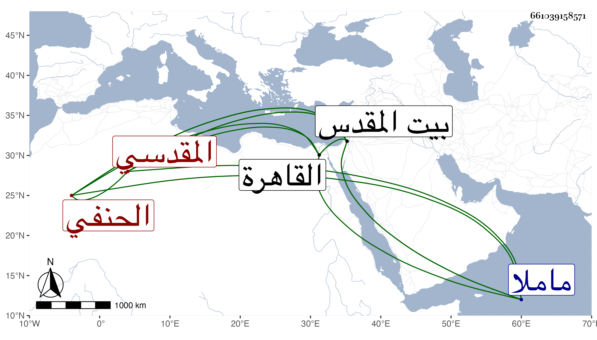

0902Sakhawi.DawLamic.ITO20230111-ara1.EIS1600.661039158571
Biography ID: 661039158571
306
محمد بن محمد بن عبد الله بن سعد بن أبي بكر بن مصلح بن أبي بكر بن سعد الشمس بن الشمس المقدسي الحنفي أخو سعد وعبد الرحمن وإبراهيم الماضي ذكرهم وأبوه وابنه عبد الله ويعرف كسلفه بابن الديري . ولد في ربيع الأول سنة سبعين وسبعمائة بالقدس ونشأ به فحفظ القرآن وتفقه بأبيه وبالكمال الشريحي وعن أبيه أخذ الأصول وأخذ النحو عن المحب الفاسي وعبد الله الزعبي المغربي وسمع بأخبار أخيه شيخنا علي الشهاب أبي الخير بن العلاني وكذا سمع على الشهابين ابن مشت وابن المهندس وغيرهما وولي تدريس المعظمية وغيرها وصار المرجوع إليه في بيت المقدس إقراء وإفتاء وقدم القاهرة مرارا ، وكان إماما مفوها ناظما ناثرا حسن العشرة لين الجانب كثير المفاكهة لا يمل جليسه حج قبيل موته ثم عاد إلى بلده وهو متمرض فلم يلبث أن مات في أواخر جمادى الأخرة سنة تسع وأربعين ودفن بمقبرة ماملا وشبعه خلق منهم العز القدسي شيخ الصلاحية . ومما كتبه عنه بعض الجماعة من نظمه :
| أصبحت في حسنكم مغرما | وعنكم والله لا أسلو |
| إن شئتم قتلي فيا حبذا | القتل في حبكم سهل |
| من مات فيكم نال كل المنى | وزاده يا سادتي فضل |
| فواصلوا إن شئتم أو دعوا | فكل ما لاقيته يحلو |
| من رام سلواني فذاك الذي | ليس له بين الورى عقل |
بلغني أنه كان لفاقته يأخذ على الفتوى رحمه الله وإيانا .
